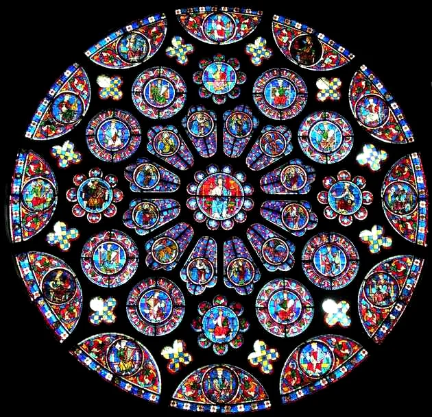

Mandala
A mandala é, originalmente, um círculo que contém em seu interior desenhos de formas geométricas, figuras humanas e cores variadas.
São encontradas em religiões como o budismo e o hinduismo
, bem como na cultura de tribos indígenas norte-americanas como os Sioux.
Significado da Mandala
A palavra mandala significa círculo em sânscrito e é considerada como um símbolo de cura e espiritualidade. Para os hinduístas e budistas, a mandala ajuda na concentração da prática meditativa e é comum encontrá-la nos templos dessa religião.
A Mandala para os Povos Originários Americanos
Entre os nativos americanos, acredita-se que a mandala tenha o poder de proteger e afastar os maus sonhos e espíritos malignos. Por isso, também recebe o nome de filtro dos sonhos.Uma antiga lenda indígena conta que uma mãe não conseguia que seu filho dormisse à noite. Por isso, procurou ajuda da curandeira da tribo que a recomendou fazer um círculo com um labirinto dentro e o pendurasse. A mãe o fez e a criança pôde dormir tranquila, pois os sonhos maus ficaram presos no emaranhado de linhas.
A Mandala no Cristianismo
Embora não seja usado para fins de cura, as mandalas estão presentes no cristianismo. As rosetas das catedrais góticas podem ser consideradas mandalas. O fato de este símbolo estar disseminado em tantas culturas reflete o significado que o círculo tem para o subconsciente. Como não é uma forma geométrica encontrada na natureza, traduz perfeitamente a ideia de perfeição que os seres humanos pretendem alcançar.
A Mandala na Educação
As mandalas são um recurso didático utilizado por vários professores de arte, história e matemática, pois este símbolo serve para ensinar vários tópicos tais quais:
- Formas geométricas
- Cores
- Diferenças de Tamanhos
- Percepção Visual
- Historia da Arte
- Historias das Religiões